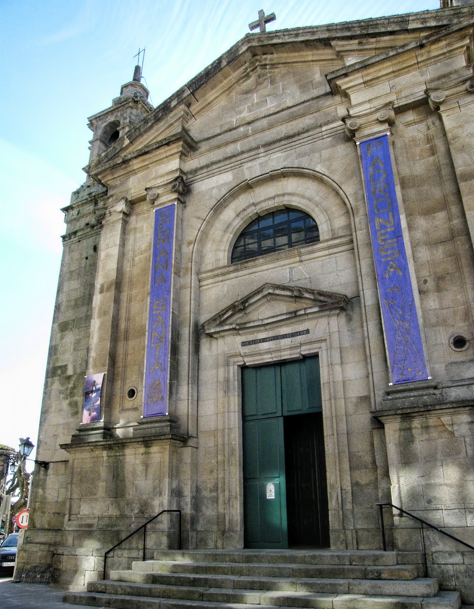

Main monuments of the city
Padrón es una pequeña villa de origen medieval que no pasa desapercibida dentro de la geografía gallega, y que ofrece una gran cantidad de monumentos en los que saciarse de cultura.
Marcos Castro
Update date: 18/10/2022
Church
It is a neoclassical style construction in which you can also see remains of previous temple uprisings. Inside you can find different altars and walls with elements of the Jacobean tradition and of Santiago Apóstol.
Padron Church
Carmen Convent
It is the first convent of barefoot Carmelite nuns in Galicia. It was founded in the middle of the 18th century by the nun María Antonia de Jesús from a noble family native to Villa de Cuntis. The main façade is decorated with an image of the Virgen del Carmen, the work of the sculptor Gambino.
Rosalia de Castro House
In this space you can enjoy a journey through the events that marked the life and work of the most renowned Galician writer, Rosalía de Castro. The ground floor of the building is dedicated to the author's life, the environment in which she lived and her relationship with the Galician people.